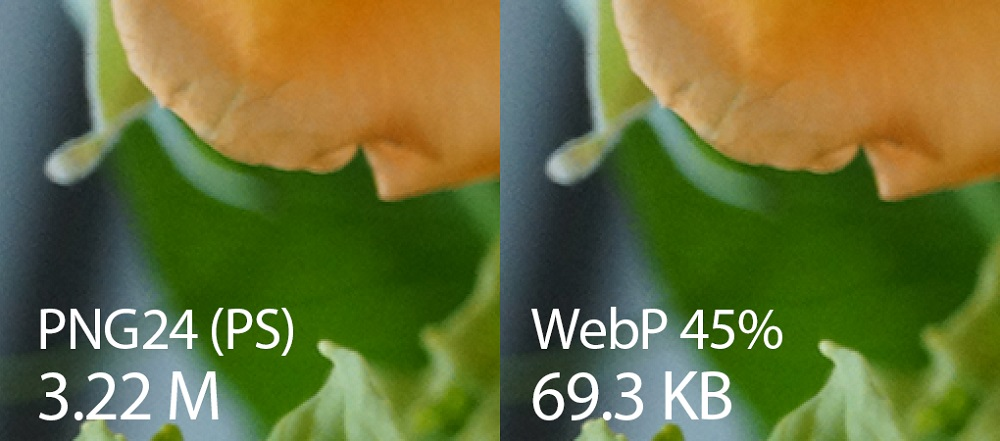

WebP — это формат файла, разработанный компанией Google в 2010 году. Его особенностью является продвинутый алгоритм сжатия, позволяющий сократить размер картинки без видимых потерь в качестве. Да, другие форматы тоже поддерживают сжатие, но технологии, стоящие в основе WebP, куда прогрессивнее. И если сравнивать WebP с конкурентами в соотношении степени сжатия к качеству картинки, то разработка Google одержит уверенную победу. В среднем вес картинок сокращается на 25–35%, что позволяет вебмастерам размещать на сайтах больше изображений, не тратя впустую драгоценное пространство.
Естественно, основное преимущество — это размер. Сокращение размера положительно влияет сразу на четыре аспекта работы в интернете:
WebP использует новый алгоритм сжатия, поэтому искажение (т.е. деформация и ухудшение качества) выглядят иначе относительно других типов файлов. WebP оставляет четкие края фотографии, но при этом ухудшается детализация и текстура, что неизбежно при сжатии с потерями. В то время как сопоставимый JPEG-файл показывает дрожание на сплошных участках изображения, WEBP может похвастаться гладкими переходами даже на самых низких настройках качества.
Недостаток этого в том, что лица людей могут выглядеть пластиковыми или постеризированными при низкой настройке качества.
.jpg)
Есть еще пара особенностей формата WebP. Настройки сжатия не повторяют в точности таковые в JPEG. Не стоит ожидать, что 50%-качество JPEG будет соответствовать 50%-качеству WebP. В случае в WebP качество падает довольно стремительно, так что начинать лучше с наибольших значений и постепенно их уменьшать. Другой плюс в пользу WebP — способность добавлять маску альфа-канала, прямо как в PNG. В отличии от конкурирующего формата, изображение формата WebP вы можете сжать до одной десятой размера изображения в формате PNG. Это действительно то, чем выделяется WebP.
Формат PNG считается лучшим, если речь идёт о картинках с текстом, логотипах и другой графике с относительно небольшим числом цветов и отсутствием полутонов. С фотографиями формат справляется намного хуже: при сравнимом с JPEG качестве изображения размер файла оказывается намного большим. WebP умеет сжимать простую графику не хуже PNG, даже несколько выигрывая в размерах при одинаковой цветопередаче и уровне детализации, а с фотографиями справляется гораздо лучше.
